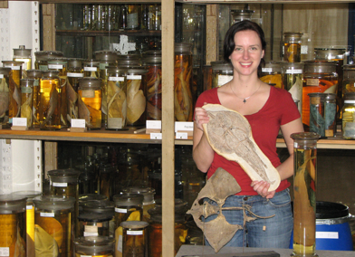

biographical sketch

Current affiliations
Assistant Professor,
Department of Bio-Medical Sciences
Philadelphia College of
Osteopathic Medicine
4170 City Avenue,
Philadelphia, PA 19131
Research Associate,
Academy of Natural Sciences,
of Drexel University
Previous affiliations
Instructor of Anatomical Sciences, Ohio University Heritage College of Osteopathic Medicine. September 2010 - June 2012
Postdoctoral Researcher, Ohio Center for Ecology and Evolutionary Studies. April 2010 - June 2012
Ph.D. Geological Sciences. Specialty Vertebrate Paleontology. The University of Texas at Austin. May 22, 2010
Scientific Fellow, Museum für Naturkunde der Humbolt-Universität zu Berlin, 2008
M.S. Organismic & Evolutionary Biology, University of Massachusetts, Amherst. May 21, 2005
B.S. Geology, Stony Brook University, New York. December 16, 2001

